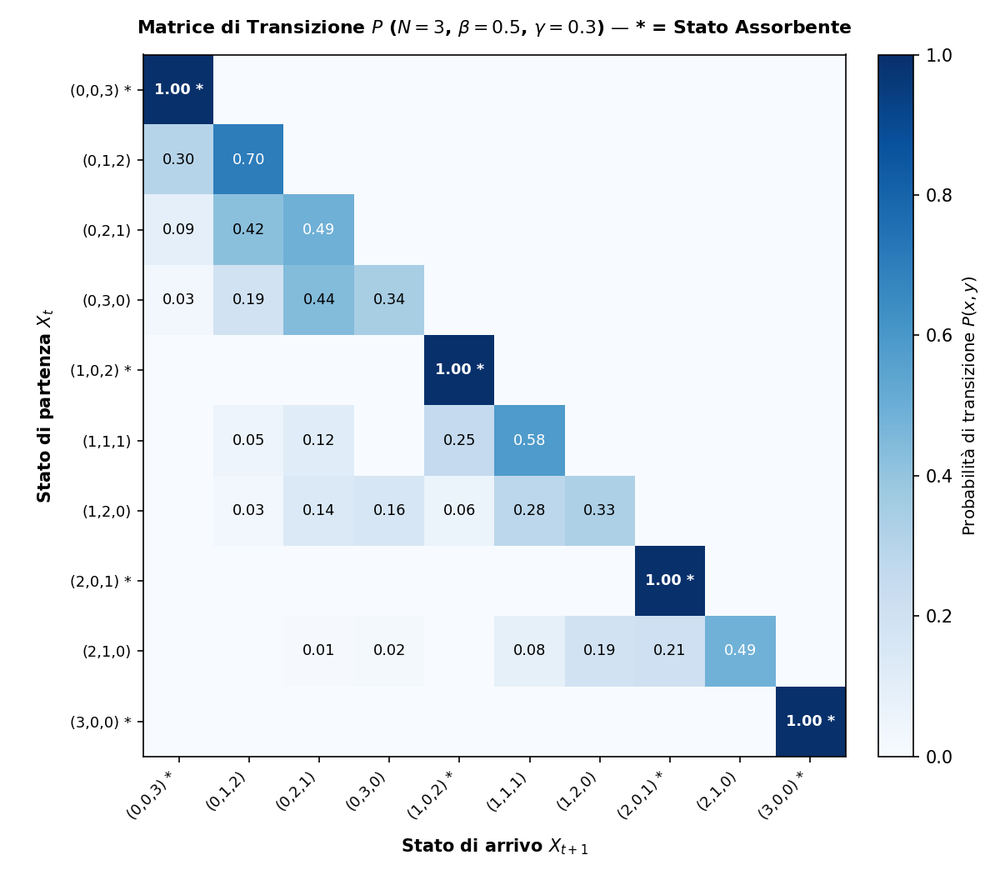

📐 Formalizzazione Matematica & Dinamica Condizionata
Definito sullo spazio di probabilità \((\Omega, \mathcal{F}, \mathbb{P})\), il processo \(\{X_t\}_{t \in \mathbb{N}_0}\) con \(X_t = (S_t, I_t, R_t)\) evolve sullo spazio degli stati:
\[E = \left\{ (s, i, r) \in \mathbb{N}_0^3 : s + i + r = N \right\}, \quad |E| = \frac{(N+1)(N+2)}{2} = \binom{N+2}{2}\]
Il passo \(X_t \to X_{t+1}\) è generato da due variabili binomiali condizionatamente indipendenti:
\[C_t \mid X_t \sim \text{Bin}\left(S_t, \frac{\beta I_t}{N}\right), \quad G_t \mid X_t \sim \text{Bin}(I_t, \gamma)\]
\[S_{t+1} = S_t - C_t, \quad I_{t+1} = I_t + C_t - G_t, \quad R_{t+1} = R_t + G_t\]
La probabilità di transizione congiunta \(P(x, y) = \mathbb{P}(X_{t+1}=y \mid X_t=x)\) per \(y=(s-c, i+c-g, r+g)\) è:
\[P(x, y) = \binom{s}{c}\left(\frac{\beta i}{N}\right)^c \left(1-\frac{\beta i}{N}\right)^{s-c} \cdot \binom{i}{g}\gamma^g (1-\gamma)^{i-g}\]
🧩 Struttura della Matrice \(P\) (\(N=3\), 10 Stati)
Partizione in stati transitori \(\mathcal{T} = \{i > 0\}\) (\(d_T = 6\)) e assorbenti \(\mathcal{A} = \{i = 0\}\) (\(d_A = 4\)). La matrice è in forma canonica:
\[P = \begin{pmatrix} Q & R \\ 0 & I_{|\mathcal{A}|} \end{pmatrix}\]

🔍 Clicca per ingrandire
• Celle Blu Scuro (\(1.00^*\)): stati assorbenti con permanenza certa \(P_{ii}=1.0\).
• Aree Bianche (\(0.00\)): transizioni impossibili per la monotonicità di \(R_t\) (\(R_{t+1} \ge R_t\)).